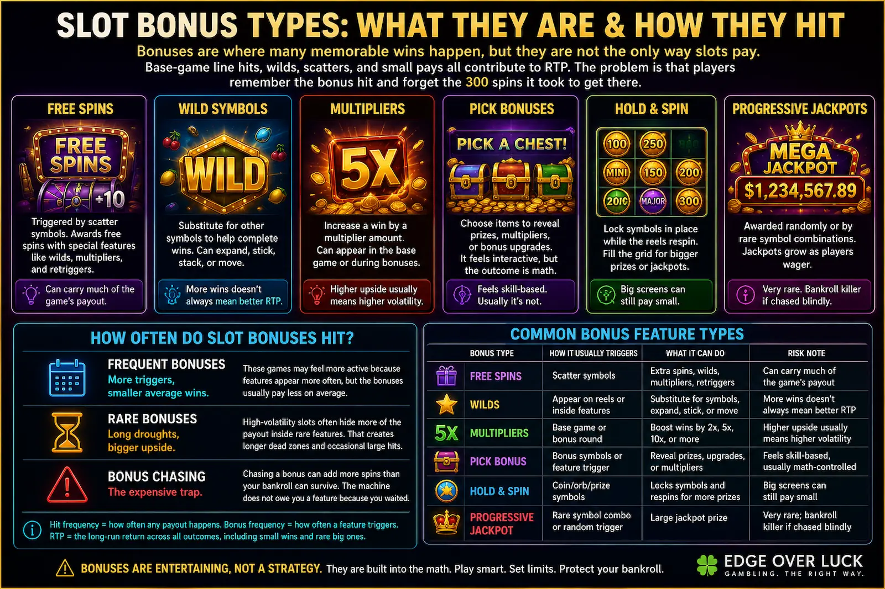

Simulate droughts, bonus misses, and bankroll drain before risking real money.
Interactive Tool
Slot Simulator for RTP, Volatility, and Bankroll Swings
Test bankroll, bet size, RTP, volatility, and spin count before variance starts taking bites.
Watch a “reasonable” slot plan get dragged through streaks, droughts, and bust risk. The reels have no memory. Your wallet does.
Small spins buy more time; high-volatility bets buy drama.
Find your gambling type after testing a session.
Live Tool
Spin the machine, then stress-test the session
The reels below use the same RTP and volatility preset as the calculator, so each visual spin is tied to the payout math.
Live spin
Math-backed reels
7
BAR
🔔
🍒
♦
Reels
Set your bankroll, bet size, and preset — then spin one realistic result.
Bet$0.00
Symbols—
Payout$0.00
Bankroll change$0.00
Estimated end bankroll$0.00
Bust chance0%
Best run (single simulation)$0.00
Worst run (single simulation)$0.00
Average actual RTP0%
How this tool works
The simulator helps you see how rough slot variance can feel before real money is on the line.
- Estimates: Simulated bankroll swings, RTP behavior, volatility streaks, and drawdown pressure.
- Assumes: Your selected RTP, volatility profile, session length, and random simulated outcomes.
- Does not guarantee: Real machine results, or that a casino game will match any one simulation run.
For limits, warning signs, and help resources, read our responsible gambling guide.
Read the output
What this means after the spin run
Slots do not adjust because of prior misses. Use the outputs to read bankroll pressure before chasing the next bonus round.
Long-run average, not tonight’s forecast.
A 96% game can still produce a losing short session.
This is the pain gauge.
If bust chance jumps, reduce bet size or session length before increasing hope.
That spread is volatility talking.
One run can look heroic while another eats the same bankroll.
Bonus Mechanics
Slot Bonus Types: Free Spins, Multipliers, Wilds, and Bonus Rounds
Big memorable slot wins often come from bonus features, but bonuses are not predictable and they do not make slots beatable. Bonus payouts are part of RTP, not extra money outside the math.
Bonuses are where many memorable wins happen, but they are not the only way slots pay. Base-game line hits, wilds, scatters, and small pays all contribute to RTP. The problem is that players remember the bonus hit and forget the 300 spins it took to get there.

Free Spins
A trigger can award spins where the game runs its own bonus rules. Great when they land, dry when they do not.
Wild Symbols
Wilds substitute into paylines and can rescue near-misses. They lift hit quality, but they still follow the same random engine.
Multipliers
A win can be scaled up by 2x, 5x, or more. Most spins still return little or nothing, which is where bankroll pressure builds.
Pick-and-Win Bonuses
You pick objects and reveal credits, multipliers, or mini games. The reveal feels skill-based, but the outcomes are preweighted in the math model.
Hold-and-Spin Features
Landing enough special symbols can lock reels and give respins. These features can swing sessions fast, especially in high-volatility games.
Progressive Jackpots
A small part of wagers can feed a growing prize. Huge upside exists, but hit frequency is usually very low and not forceable.
Volatility Reality
How Often Do Slot Bonuses Hit?
There is no universal bonus frequency because every slot has its own math. Frequent bonuses usually mean smaller average bonus wins, while rare bonuses usually mean longer droughts with bigger potential upside.
High-volatility games often push more payout into rare features. Chasing a bonus can burn through a bankroll long before the feature appears.
| Bonus Type | How it usually triggers | What it can do | Risk note |
|---|---|---|---|
| Free Spins | Scatter symbols or feature reels | Adds a block of bonus spins with modified payouts | Can take many dead spins to reach, then pay modestly |
| Wilds | Wild symbols appear in base or bonus game | Completes paylines and improves hit quality | More line completions does not remove long losing streaks |
| Multipliers | Special symbols, reels, or bonus modes | Scales wins when a paying line connects | Big multiplier moments are rare in many games |
| Pick Bonus | Bonus trigger opens a pick screen | Reveals credits, multipliers, or bonus entries | Feels interactive, but outcomes are still RNG-weighted |
| Hold-and-Spin | Enough feature symbols land in view | Locks symbols and gives respins for feature growth | Feature hunts can drain bankroll quickly during droughts |
| Progressive Jackpot | Rare jackpot combination or specific feature path | Can award very large top-end payouts | Very low hit rate can create extreme bankroll pressure |
Myth vs Math
Slot myth vs math
The machine is not due. Independent spins can still make “one more spin” sound reasonable.
“This machine is due.”
Past spins do not make the next win more likely.
Random means no apology spin.
Past misses do not make the next paid result more likely.
“Tiny bets mean tiny losses.”
Tiny bets repeated thousands of times still drain bankrolls.
Volume is the multiplier.
Spin count, bet size, RTP, and volatility all compound the session story.
Session Planning
Slot session scenarios
Same bankroll, different settings, very different risk profile.
High bet size makes even normal dry spells feel personal.
It does not erase the edge, but it can reduce violent swings.
Bonus hunting can add more spins than the bankroll can support.
Big hit potential usually comes with long miss streaks.
Variance Patterns
Slot streak examples
Variance is the show. Bankroll planning is the exit sign.
Big win, decision point.
Giving it back is optional; set the decision point early.
Lots of small misses.
Nothing dramatic, just volume and negative expectation.
Bet size jumps after a drought.
The next spin does not correct the previous results.
A rebound stalls out.
Partial recoveries are common in volatile sessions.
Heater Hunter check
Do you chase volatility or manage it?
Some bankroll leaks come from behavior, not math. Find out how your habits respond to wins, losses, and volatility.
Bankroll Trail
Session bankroll trail
Bars below show one autoplay run so you can spot drawdowns, recoveries, and changing bankroll pressure.
What RTP can and cannot save you from
RTP is the long-run average over huge samples. It does not promise your next 100 or 500 spins will behave.
Use this simulator to compare equal bankrolls at 94% vs 96.5% RTP and observe how short-run variance shapes session outcomes.
Read the RTP Reality CheckVolatility vs bankroll pain
Higher volatility often means longer dead zones, sharper drawdowns, and occasional spikes. Your bankroll has to survive the dry stretches between large hits.
Read the Volatility Guide
Slot Simulator FAQ
Questions this slot simulator helps answer
Use these answers as guardrails while reading the simulator output.
What does this slot simulator estimate?
It estimates bankroll swings, bust chance, actual RTP, best and worst run outcomes, and how volatility can affect a slot session.
Does RTP predict one session?
No. RTP is a long-run average over a very large number of spins. A single session can finish far above or below the listed RTP.
Why can high-volatility slots drain bankroll quickly?
High-volatility slots often concentrate more payout into less frequent wins or bonus events. That can create long dry stretches before any large hit arrives.
Can this simulator find a machine that is due?
No. The tool models risk and variance. It cannot predict a real machine, guarantee profit, or identify a machine that is due.
Keep Learning
Next slot tools to try
Move from simulated spin results into the specific math behind RTP, volatility, and bankroll survival.
Start here
Slots Guide
Learn the basic slot terms before comparing sessions.
RTP RTP ExplainedSee why return to player is long-run math, not a short-session promise.
Volatility Volatility GuideUnderstand why the same RTP can feel smooth or violent.
Bankroll Bankroll SurvivalCheck whether bet size and spin count are putting too much pressure on the session.